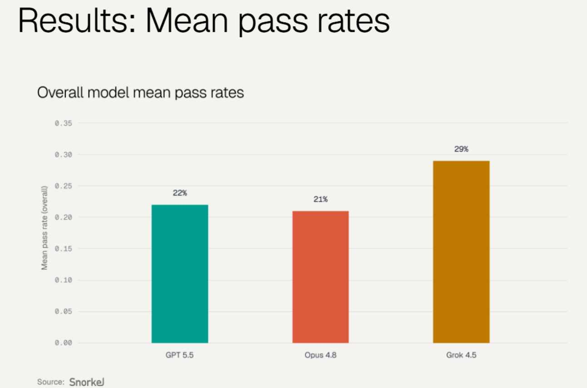

Terminal-Bench 83.3%、Snorkel 专业任务领领跑、80 TPS、省 4.2 倍 token。 4 天实测，一次讲清它强在哪、坑在哪。
7 月 8 日 SpaceXAI（马斯克的 AI 公司）联手 Cursor，甩出了 Grok 4.5。四天过去，X、Reddit、YouTube 上的开发者已经把它翻来覆去测了个遍。
一句话概括这几天的风向——「聪明」和「快」以前只能二选一，Grok 4.5 说：我全都要。 它没在所有跑分上屠榜，但打出了一个非常刁钻的定位：Opus 级的能力、一半的价钱、好几倍的速度和省钱。 对天天跑 Agent、烧 token 的开发者来说，这个组合杀伤力极大。
01 先看战绩：强在「真实活」，不是「刷榜」
Grok 4.5 最亮的地方，是在贴近真实工作的基准上，而不是那些纯做题的榜。
TERMINAL：终端里跑 Agent，最贴近真实 DevOps
这是衡量「AI 能不能自己在终端里规划、调工具、干完一整个活」的核心指标。四个顶级模型挤在 5 个点内，Grok 4.5 的 83.3% 几乎咬住 GPT-5.5，还反超了 Opus 4.8：
| 模型名称 | Terminal-Bench 2.1 通过率 |
|---|---|
| Claude Fable 5 | ~84.3% |
| GPT-5.5 | ~83.4% |
| Grok 4.5 | 83.3% |
| Claude Opus 4.8 | ~78.9% |
SNORKEL：专业知识工作，这里它是真第一
Snorkel 用了约 2000 个真实职场专业任务（法律、教育、医疗、金融、QA 分析等）来测，Grok 4.5 直接领跑，且「幻觉」和「漏掉关键分析」的错误率最低：
| 模型名称 | Snorkel 平均通过率 |
|---|---|
| Grok 4.5 | 29% |
| GPT-5.5 | 22% |
| Claude Opus 4.8 | 21% |
更狠的是分领域数据：法律 40%（对手 27-28%）、教育 58%（对手 35-42%）、医疗 35%、QA 分析 37%。

图 1：Snorkel GDPval+ 实测中 Grok 4.5 分领域领先示意
02 真正的杀手锏：又快又省
如果说跑分是「能打平」，那速度和成本才是 Grok 4.5 真正甩开身位的地方。它实现了“聪明的同时还便宜到离谱”：
- 速度 80 TPS： 官方称每秒生成约 80 个 token，独立测评甚至跑到 90+，长任务不再干等。
- 省 token 4.2 倍： 同样一个 SWE-Bench Pro 任务，Grok 4.5 平均只花约 1.6 万 token，而 Opus 4.8 要 6.7 万。
- 价格仅需半价： 输入 $2 / 百万 token、输出 $6 / 百万 token，约同级竞品的一半。

图 2：x.ai 官方发布页主打的 token 效率与吞吐速度
03 开发者实测口碑：真正的生产力工具
主流声音是：「true beast」「Opus 水平但更快更便宜」。Grok 正式跃升成「能跑长 Agent 的认真生产力工具」：
· 生产级 Agent 循环： 跑 40+ 轮硬核对话、8 次以上工具调用中状态保真、检索精准。
· Cursor 用户体验： 一句 Prompt 就建出完整 SaaS 落地页或 3D 模拟，彻底改变了开发成本结构。
04 泼盆冷水：它并不是全能第一
夸了这么多，也得老实说它的短板：
1. 纯软件工程不是最强： SWE-Bench Pro 上 Grok 4.5 只有 64.7%，落后 Claude Fable 5（80.4%）和 Opus 4.8（69.2%）。
2. 换个评测台成绩会缩水： 换到中立的 mini-swe-agent 上直接掉 9 分并落后于 Opus 和 GPT-5.5，受环境影响大。
3. 存在一处数据“污染”： Cursor 自曝其在 CursorBench 上有优势，是因为训练时意外混进了一份旧的 Cursor 代码库。
需要点破的是，「Opus-class（Opus 级）」这个说法是 xAI 和 Cursor 自己的定位话术，别盲目当成中立最终定论[cite: 8, 11]。
05 想上手？三个正规入口
好消息是，你可以通过以下正规渠道合法用上它：
· Cursor： 直接内置，所有套餐可用，首周送双倍额度。
· Grok Build： xAI 官方的 Agent 工作台，能跨 App 研究再输出成品。
· 官方 API / SpaceXAI 控制台： 以 $2/$6 的价格接进你自己的项目（欧盟 7 月中旬开放）。